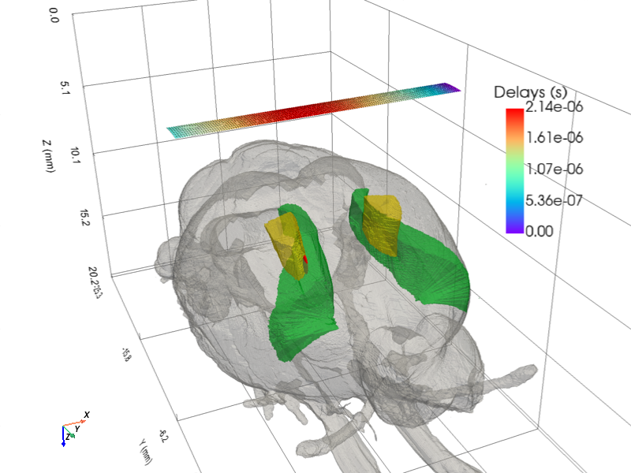
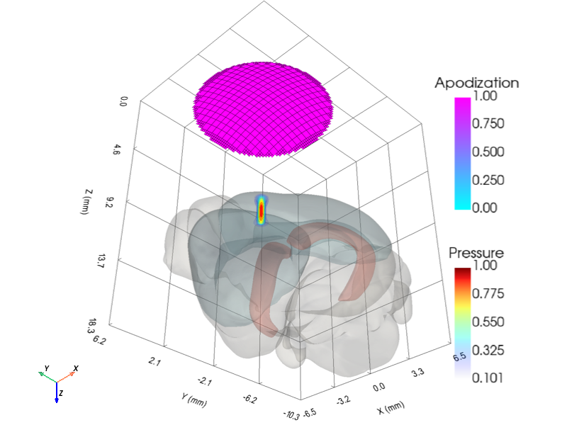

Brain Atlas¶
BG_Atlas wraps the BrainGlobe Atlas API
and adds a registration step that maps atlas voxel coordinates into the
normalised brain space (BPS) used by PyField's coordinate system.
Loading an atlas¶
from pyfield.brain_atlas.bg_atlas import BG_Atlas
# Show all available atlases
BG_Atlas()
# Load with default region ("root")
atlas = BG_Atlas("whs_sd_rat_39um")
# Load specific regions
atlas = BG_Atlas("whs_sd_rat_39um",
region_names=["root", "Hippocampus", "Cortex"])
On load, BG_Atlas:
1. Downloads the atlas from BrainGlobe if not already cached.
2. Looks up pre-calibrated landmark data in _ATLAS_LANDMARKS (see below).
3. Computes the 4×4 affine bgatlasToBrain and applies it to the mesh.
Pre-calibrated atlases¶
| Atlas name | Landmark type |
|---|---|
whs_sd_rat |
whs_voxels — origin, bregma, lambda in voxels |
allen_mouse |
manual_fit — origin voxel + bregma-lambda distance |
For other atlases supply landmarks manually:
# whs_voxels approach
atlas = BG_Atlas("my_atlas", whs_voxels={
"origin": np.array([244, 623, 248]),
"bregma": np.array([246, 653, 440]),
"lambda": np.array([244, 442, 434]),
})
# manual_fit approach
atlas = BG_Atlas("my_atlas", manual_fit={
"origin": np.array([228, 330, 118]),
"bregma_lambda_um": 2300,
})
To register your atlas permanently, add it to _ATLAS_LANDMARKS in
bg_atlas.py.
Transforming the mesh¶
import numpy as np
# Get the atlas-to-brain transform (already applied at load time)
T = atlas.bgatlasToBrain # (4,4) ndarray
# Transform a copy (non-destructive)
transformed = atlas.transform(T_matrix=my_T)
# Transform in-place
atlas.transform(T_matrix=my_T, inplace=True)
# Reset to the original registration
atlas.reset_mesh()
Visualising with PyVista¶
Compose atlas anatomy, transducer geometry, and pressure field in a single interactive scene by chaining the PyVista helper functions.
Rat brain — Domino linear array¶

import numpy as np
import pyvista as pv
from pyfield.brain_atlas import BG_Atlas
from pyfield.psimulation import PyField
from pyfield.transducers import Domino
from pyfield.utilities import (
add_pressure_vol, add_regions_mesh, add_transducer_mesh, create_vol_mesh,
)
# ── Atlas ──────────────────────────────────────────────────────────────────
region_names = ("root", "M1", "S1-hl")
atlas = BG_Atlas("whs_sd_rat_39um", region_names=region_names)
# ── Transducer & simulation ────────────────────────────────────────────────
focus_mm = np.array([-1, 0, 8])
tx = Domino()
tx.compute_delays(focus_mm=focus_mm)
tx.compute_apodization(focus_mm=focus_mm, FoverD=1, apodization_type="rect")
sim = PyField(tx)
x, y, z, p = sim({
"x_extent": [-0.25 + focus_mm[0], 0.25 + focus_mm[0]],
"y_extent": [-0.5, 0.5],
"z_extent": [-1.0 + focus_mm[2], 1.0 + focus_mm[2]],
"dx": 0.0125, "dy": 0.025, "dz": 0.05,
}, method="auto")
pressure_vol = create_vol_mesh(x, y, z, p / p.max(), scalars="Pressure")
# ── Registration (atlas → lab frame) ──────────────────────────────────────
lambda_bregma_mm = 8.0 # rat bregma-lambda distance
cortex2probe_mm = 4.5 # distance from cortex surface to probe face
scale = np.eye(4); scale[:3, :3] *= lambda_bregma_mm
z_top = atlas.pv_mesh["root"].bounds[5]
t_depth = np.eye(4); t_depth[2, 3] = -cortex2probe_mm - z_top * lambda_bregma_mm
t_xy = np.eye(4); t_xy[0, 3] = 2.0; t_xy[1, 3] = -2.0
inv_z = np.diag([1.0, 1.0, -1.0, 1.0])
T = inv_z @ t_depth @ t_xy @ scale
atlas.transform(T_matrix=T, inplace=True)
# ── Compose scene ──────────────────────────────────────────────────────────
pl = pv.Plotter(window_size=(800, 600))
pl = add_regions_mesh(atlas.pv_mesh, plotter=pl, kwargs_dict={
region_names[0]: {"color": "lightgray", "opacity": 0.35},
region_names[1]: {"color": "permanentgreen", "opacity": 0.5},
region_names[2]: {"color": "cadmiumlemon", "opacity": 0.5},
})
pl = add_transducer_mesh(tx.get_mesh(), plotter=pl, scalars="Delays")
pl = add_pressure_vol(pressure_vol, plotter=pl, plot_focal_spot=True)
pl.camera.up = (0, 0, -1)
pl.show()
Mouse brain — circular transducer (TUS)¶

import numpy as np
import pyvista as pv
from pyfield.brain_atlas import BG_Atlas
from pyfield.psimulation import PyField
from pyfield.transducers import FlatCircularTransducer
from pyfield.utilities import (
add_pressure_vol, add_regions_mesh, add_transducer_mesh, create_vol_mesh,
)
# ── Atlas ──────────────────────────────────────────────────────────────────
region_names = ("root", "Isocortex", "CA1")
atlas = BG_Atlas("allen_mouse_25um", region_names=region_names)
# ── Transducer & simulation ────────────────────────────────────────────────
focus_mm = np.array([0, 0, 6])
tx = FlatCircularTransducer(diameter_mm=10.0, no_sub=20, frequency_Hz=0.5e6)
tx.compute_delays(focus_mm=focus_mm)
tx.compute_apodization(focus_mm=focus_mm, FoverD=1)
sim = PyField(tx)
x, y, z, p = sim({
"x_extent": [-3, 3], "y_extent": [-3, 3], "z_extent": [2, 10],
"dx": 0.1, "dy": 0.1, "dz": 0.1,
}, method="auto")
pressure_vol = create_vol_mesh(x, y, z, p / p.max(), scalars="Pressure")
# ── Registration (atlas → lab frame) ──────────────────────────────────────
lambda_bregma_mm = 4.0 # mouse bregma-lambda distance
cortex2probe_mm = 2.0
scale = np.eye(4); scale[:3, :3] *= lambda_bregma_mm
z_top = atlas.pv_mesh["root"].bounds[5]
t_depth = np.eye(4); t_depth[2, 3] = -cortex2probe_mm - z_top * lambda_bregma_mm
inv_z = np.diag([1.0, 1.0, -1.0, 1.0])
T = inv_z @ t_depth @ scale
atlas.transform(T_matrix=T, inplace=True)
# ── Compose scene ──────────────────────────────────────────────────────────
pl = pv.Plotter(window_size=(800, 600))
pl = add_regions_mesh(atlas.pv_mesh, plotter=pl, kwargs_dict={
region_names[0]: {"color": "lightgray", "opacity": 0.3},
region_names[1]: {"color": "lightblue", "opacity": 0.5},
region_names[2]: {"color": "salmon", "opacity": 0.6},
})
pl = add_transducer_mesh(tx.get_mesh(), plotter=pl)
pl = add_pressure_vol(pressure_vol, plotter=pl, plot_focal_spot=True)
pl.camera.up = (0, 0, -1)
pl.show()
API reference¶
| Method | Description |
|---|---|
set_bgatlas(name, ...) |
Reload with a different atlas |
get_bgatlasToBrain(bg_atlas, ...) |
Compute the registration matrix |
get_pv_mesh_from_atlas(bg_atlas, names) |
Load region meshes from atlas |
transform(T_matrix, pv_mesh, inplace) |
Apply a transform to the mesh dict |
reset_mesh() |
Reload and re-register to bgatlasToBrain |
summary() |
Print object state |
clean() |
Release mesh and atlas objects |
show_atlases() |
List all BrainGlobe atlases |